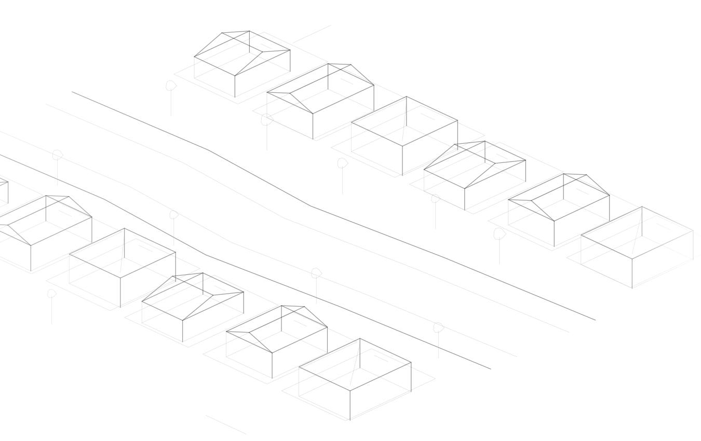

SHAPING
WHAT COMES
NEXT.
Thoughtful planning begins by seeing a site's possibilities clearly. KOVA provides Auckland-based feasibility advice, resource consent and AEE support, while helping connect projects with the right design and technical specialists.
Explore our expertise
GOOD PLANNING
IS MORE THAN
PERMISSION.
The decisions that shape a place begin long before construction.
Behind every proposal is a relationship between land, people and possibility. Understanding the rules, the environment and the realities of delivery helps turn an idea into an informed direction.
How we thinkFROM FIRST IDEA
TO INFORMED ACTION.
Every site holds different opportunities and constraints. Good advice starts by understanding both.
Resource consents
Clarifying the planning pathway for land use, subdivision and development.
Building consent coordination
Connecting the building approval pathway with the drawings and specialist inputs it requires.
Environmental assessments
Understanding how a proposal may affect its surroundings, with an assessment shaped by the site and its scale.
Site feasibility
Seeing a site's potential and limitations before committing to a direction.
ASK BETTER
QUESTIONS.
Practical ideas, clearly explained. Explore the questions that shape a site's possibilities, and where to look next.
EXPERTISE.
Explore the services that help turn possibility into a practical plan.